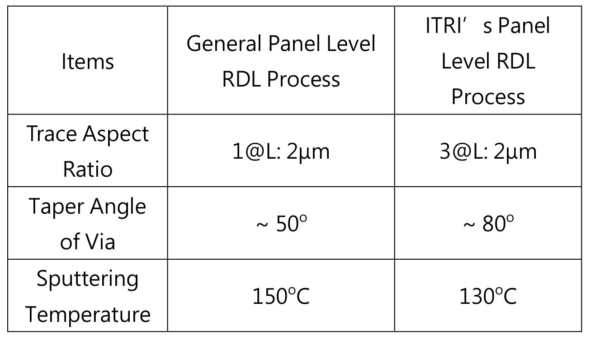

| 全球領先無光罩高深寬比曝光及高填孔濺鍍技術與應用 World Leading High Aspect Ratio Digital Lithography & High Taper Angle Sputtering Technologies for 5G IPD Applications |
| 工研院以無光罩高深寬比(AR:3)圖案化及高填孔濺鍍(Taper angle: 80o)技術為基礎，在面板級扇出型封裝之重佈線層(Re- distribution Layer, RDL)上，整合兼具厚膜(電感)元件與薄膜 元件(電容)的三階帶通濾波器(@3.5GHz)，應用於射頻無線通 訊，降低訊號傳輸衰減率，減少離散元件之使用，實現更薄更 小的電路面積目標，提供 5G 系統微縮解決方案。 Based on high aspect (AR:3) ratio digital lithography & high taper angle (80o) sputtering technologies, ITRI has developed a 3rd-order bandpass filter on redistribution layers (RDLs) by using fan-out panel level RDL technology. It achieves in a thinner stacking structure and less circuit size that can be used as an optimal solution to minimize the 5G system module.  |
| 技術洽詢聯絡人：鄭惟元 聯絡電話：03-5913503 E-mail：Weiyuan.Cheng@itri.org.tw |